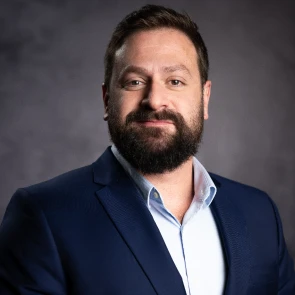
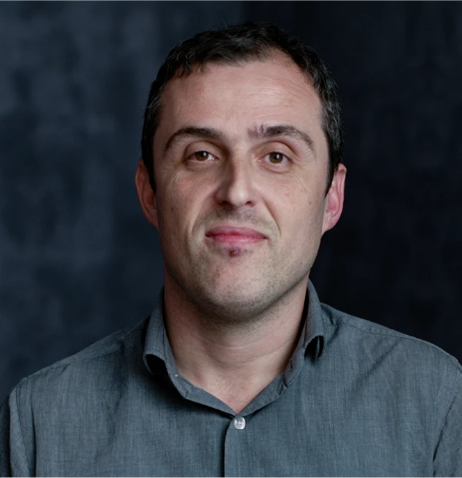
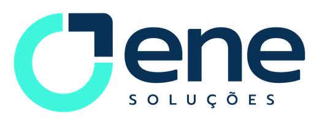
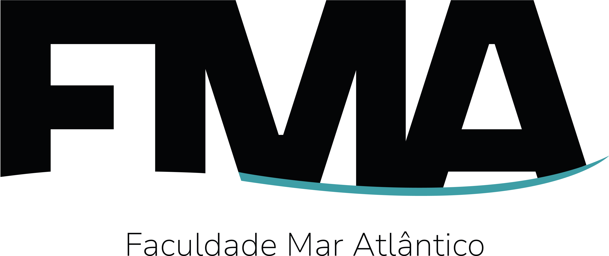
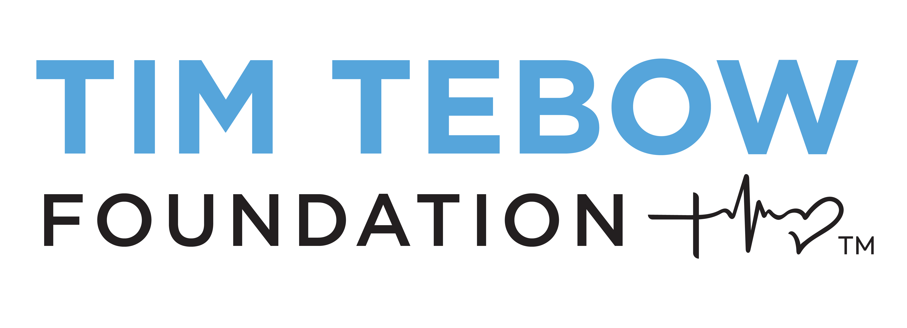
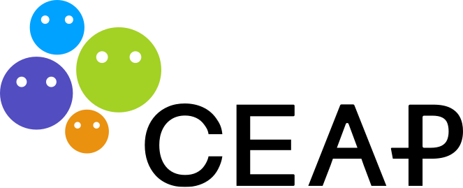
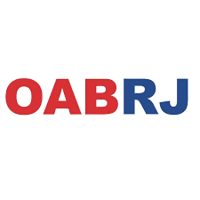
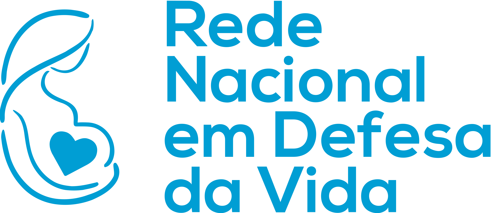
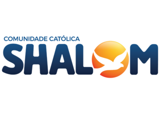
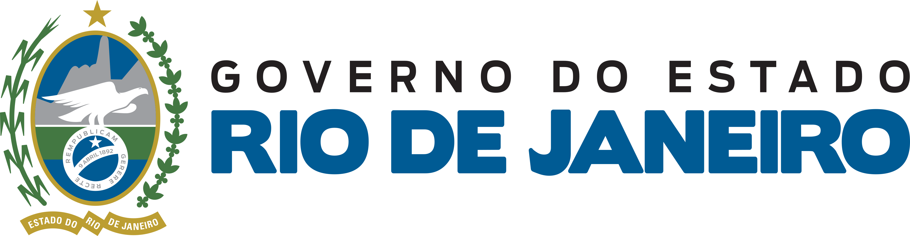

Sobre Nós
Conheça nossa história, missão e as pessoas por trás da Associação Marsili
GW Social
Fundado em Goiânia por Khenia Christina. Início das ações voluntárias com doações de roupas, alimentos e itens de higiene a pessoas em situação de rua.
Curso Livre para Terapeutas (CLT)
Em agosto, lançamento no Rio de Janeiro com apoio da FMA. Três turmas formadas com 150 alunos, em Rio das Pedras e Realengo.
Ambulatório Social de Psiquiatria
Início dos atendimentos gratuitos em outubro Até janeiro de 2025, mais de 1.300 atendimentos.
Serviço de Orientação Jurídica
em janeiro, atendimento gratuito abordando demandas jurídicas em comunidades vulneráveis.
Curso de Inglês Comunitário
A partir de março, aulas gratuitas de inglês para jovens a partir de 14 anos na Comunidade Cruzada de São Sebastião (RJ), com foco em inclusão, cultura e oportunidades profissionais.
Expansão Nacional do CLT
O curso ultrapassa fronteiras e forma 39 novas turmas em diversos estados do Brasil. Alunos passam a atuar como psicoterapeutas voluntários.
Ambulatório Emergencial – Enchentes RS
Instalação de ambulatório completo em Canoas (RS), em resposta à tragédia das enchentes. Estrutura montada em 3 dias com recepção, triagem, atendimento médico e psicológico, farmácia e espaço infantil.
+4 mil Atendimentos no RS
Missão humanitária mobiliza mais de 80 voluntários de todo o Brasil. Atendimentos médicos, psicológicos e distribuição de medicamentos em diversas cidades do estado.
Nossa História
A Associação Marsili é uma entidade sem fins lucrativos fundada pelo médico e educador Dr. Italo Marsili, com o objetivo de promover impacto social real através da educação, da assistência material direta, do voluntariado profissional e da formação de líderes em comunidades.
Muito antes de nossa fundação oficial, nossos ideais já encontravam eco nos corações de alunos e seguidores. Inspirados pelo lema "SERVIR E SER ÚTIL", abraçaram, de forma espontânea, o compromisso de transformar valores em ações concretas — dando início a um movimento vivo, nascido da visão e do exemplo de seu fundador.
Esse primeiro movimento ganhou forma em 2019, em Goiânia, com o nascimento do GW Social. Liderado por Khenia Christina, o projeto nasceu do desejo genuíno de servir e permanecer útil, oferecendo roupas, alimentos e cuidados básicos de higiene a pessoas em situação de rua.
Desde então, mais de 100 mil vidas já foram impactadas.
Em agosto de 2023, com o apoio da Faculdade Mar Atlântico, demos início ao Curso Livre para Terapeutas (CLT) — um marco transformador para as comunidades atendidas. Foram formadas três turmas no Rio de Janeiro, reunindo 150 alunos, em sua maioria moradores das regiões de Rio das Pedras e Realengo. Ainda em 2023, a iniciativa se ampliou com a criação de uma clínica de psiquiatria gratuita, que, entre outubro de 2023 e janeiro de 2025, já realizou mais de 1.300 atendimentos.
Em janeiro de 2024, em parceria com a Faculdade Mar Atlântico, iniciamos mais um projeto de voluntariado profissional, desta vez com alunos de pós-graduação de diversas áreas do Direito: o Serviço de Orientação Jurídica. A iniciativa oferece atendimento jurídico gratuito a comunidades vulneráveis, abordando temas como regularização de documentos, direitos trabalhistas, habitacionais e outras demandas recorrentes. Com atuação online, presencial e em eventos comunitários, o projeto é conduzido por advogados voluntários e busca facilitar o acesso à Justiça, promovendo a cidadania e o fortalecimento dos direitos fundamentais.
Em 2024, o CLT cresceu. Ganhou força, atravessou fronteiras e chegou a diversos estados do Brasil, com 39 novas turmas formadas. Nesse novo estágio, os próprios alunos — já em fase final do curso — passaram a atuar como psicoterapeutas voluntários, atendendo às demandas reais de suas comunidades.
Em março de 2024, iniciamos cursos de língua inglesa voltados a moradores de comunidades do Rio de Janeiro — uma iniciativa que une educação, cultura e inclusão. Voltado a jovens a partir de 14 anos, o projeto é conduzido por voluntários experientes e vai além do ensino da língua: promove acesso, amplia perspectivas e contribui para a profissionalização dos alunos. As aulas, realizadas na Comunidade Cruzada de São Sebastião, já vêm formando e capacitando estudantes para novas oportunidades acadêmicas e profissionais.
Em Maio do mesmo ano, diante da tragédia causada pela enchente que devastou o Rio Grande do Sul, mobilizamos dezenas de voluntários médicos, psicólogos, enfermeiros, farmacêuticos e muitos outros profissionais de todo o Brasil para a criação de um Ambulatório de atendimento emergencial. O projeto foi iniciado na cidade de Canoas no dia 10 de maio de 2024. Em apenas dois dias nossa equipe montou uma estrutura completa: espaço para recepção dos pacientes, triagem com enfermeiros, diferentes espaços para atendimento médico, psicológico, sala de medicação, farmácia para distribuição de medicamentos e materiais, e até mesmo um espaço para acolhimento de crianças durante o atendimento. No dia 13 de Maio toda a estrutura estava pronta, cedida gentilmente em um amplo salão da Paróquia Nossa Senhora de Caravaggio.
Entre Maio e Junho, realizamos mais de 4 mil atendimentos a pessoas de diversas cidades do Rio Grande do Sul, oferecendo cuidados médicos, de enfermagem, apoio psicológico e medicação gratuita. Tudo isso foi possível graças ao trabalho incansável de mais de 80 voluntários de diferentes regiões do Brasil. Essa ação reafirma o propósito da Associação Marsili: servir com excelência, agir com prontidão e coordenar projetos de impacto real — independentemente das circunstâncias.
Missão, Visão e Valores
Princípios que orientam nosso trabalho.
Missão
Profissionalizar a atuação social com grandeza, espírito de serviço e impacto duradouro.
Visão
Formar uma geração de líderes que realize sonhos cada vez mais largos.
Valores
Prontidão
Magnanimidade
Audácia
Fidelidade
Nossos Programas
Conheça as principais frentes de trabalho da Associação Marsili.

Curso Livre para Terapeutas
Adultos com ensino médio completo
O projeto Curso Livre para Terapeutas é realizado com o propósito de fortalecer o tecido social de comunidades em situação de vulnerabilidade por meio da formação de terapeutas locais. A iniciativa visa não apenas promover o acesso à saúde mental, mas também desenvolver uma rede de apoio emocional profundamente enraizada na realidade sociocultural das próprias comunidades atendidas.
Capacitar membros da comunidade para atuarem como agentes terapêuticos é uma estratégia de impacto sustentável. Esses profissionais, por conhecerem as dinâmicas culturais, sociais e econômicas do território onde vivem, estão especialmente preparados para oferecer suporte emocional com sensibilidade, respeito e eficácia. Além disso, o projeto contribui diretamente para a geração de renda, a inclusão produtiva e cultura local. A presença desses terapeutas representa um recurso fundamental tanto para intervenções em momentos de crise quanto para ações preventivas e de promoção da saúde emocional.

Ambulatório de Psiquiatria
Adultos e jovens a partir dos 12 anos
Este ambulatório é um serviço social de saúde mental que opera continuamente. Com dois núcleos no Rio de Janeiro, Santa Casa de Misericórdia e outro na Barra da Tijuca, atendemos a maior parte do Estado do Rio de Janeiro.
A implantação e continuidade do Ambulatório de Psiquiatria decorrem de um diagnóstico institucional que evidencia a urgência de ampliar o acesso a cuidados especializados de saúde mental para populações socio-economicamente vulneráveis do Rio de Janeiro. Segundo a Organização Mundial da Saúde, o Brasil ocupa posição de destaque mundial em prevalência de transtornos de ansiedade e figura entre os países com maior incidência de depressão (OMS, 2021). Os impactos desses transtornos transcendem o plano individual, alcançando a produtividade econômica, a coesão familiar e os indicadores gerais de bem-estar social.

Escola de Pais
Famílias
O projeto consiste em programa socioeducativo que capacita voluntários multiplicadores e oferece, de forma continuada, encontros presenciais mensais para pais e responsáveis, complementados por materiais educativos físicos e digitais. A iniciativa é conduzida em parceria com a Faculdade Mar Atlântico, visando promover competências parentais e fortalecer vínculos familiares em comunidades atendidas. Em consonância com a nossa missão, identificamos, por meio de diagnóstico participativo realizado em 2024, fragilidades recorrentes na vivência da parentalidade nas comunidades atendidas. Entre os principais achados, destacam-se: (1) a limitação de tempo disponível dos responsáveis, em razão de extensas jornadas de trabalho e deslocamentos prolongados, fator que compromete o acompanhamento cotidiano dos filhos; (2) a sobrecarga de informações fragmentadas e por vezes contraditórias sobre métodos educativos, veiculadas sobretudo em mídias digitais, gerando insegurança na tomada de decisões parentais; e (3) a inexistência de uma rede estável de apoio, reflexão e troca de boas práticas familiares. Essas lacunas resultam em conflitos intrafamiliares, enfraquecimento da autoridade parental, baixo engajamento escolar das crianças e maior exposição a comportamentos de risco.
Saiba mais
Direção
Conheça as pessoas dedicadas que fazem a diferença.

Italo Marsili
Fundador e Conselheiro
Reitor e fundador da Faculdade Mar Atlântico, médico psiquiatra pela UFRJ, professor, escritor best-seller e empresário, fundou a Associação Marsili com o desejo de fazer o bem para as pessoas mais necessitadas, inflamando os corações dos seus alunos e voluntários afim de causar impacto positivo por muitas gerações.
Renato José de Moraes
Presidente
Advogado graduado pela Pontifícia Universidade Católica de Campinas (PUC - Campinas). Mestre em Direito Civil pela Universidade de São Paulo (USP) e Doutor pelo Programa de Pós-Graduação da Universidade Federal do Rio de Janeiro (UFRJ). Possui pós-doutorado no Programa de Pós-Graduação em Direito da Universidade Federal do Rio de Janeiro.

Marcelo Zanette Torres
Vice-Presidente
Terapeuta de casais e engenheiro de telecomunicações pela Universidade Federal Fluminense (UFF). Mestre em Engenharia de Produção pela Universidade Federal Fluminense (UFF).
Parceiros e Apoiadores
Organizações que acreditam em nosso trabalho.
Parceiros Corporativos


Instituições Parceiras






Apoio Governamental

Interessado em se tornar um parceiro?
Seja um ParceiroFaça Parte Desta História
Juntos podemos transformar mais vidas.